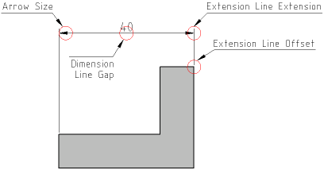

|
||
 |
||


19 Drawing Preferences
The drawing preferences dialog applies to the current drawing only. It's used to set the drawing units, paper size, dimensioning preferences, etc.
Edit - Drawing Preferences
Paper
The paper settings are only relevant when printing a drawing. The paper format and orientation that you choose in this dialog will be applied to the print preview (Figure 68).
{kind=link}
Figure 68: Paper settings for the current drawing.
Units
The chosen units and unit formats for lengths and angles are used for co-ordinates displayed in the statusbar, dimension labels and to scale inserted parts from the part library correctly. See Appendix - Drawing Units for a detailed overview of the available units and formats (Figure 69).
{kind=link}
Figure 69: Unit and unit format.
Dimensions
On this tab you can change the measures for the dimension labels, the dimension arrow size and other meaasures used for dimensioning (Figure 70).
{kind=link}
Figure 70: Dimension preferences.

Figure 71: Dimension measures.
|